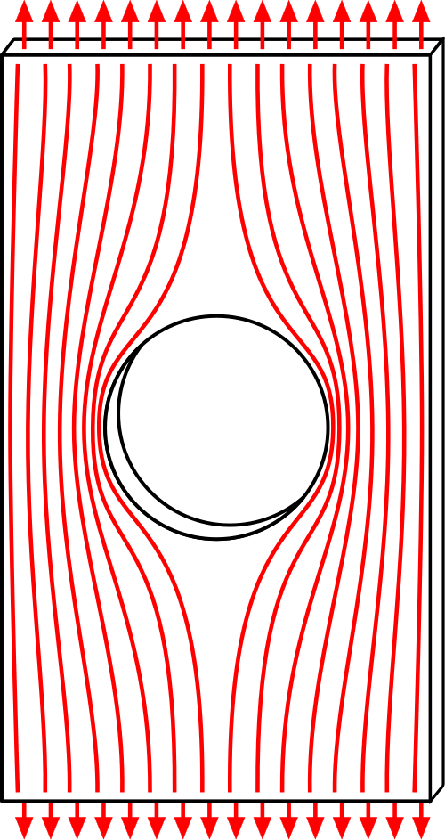
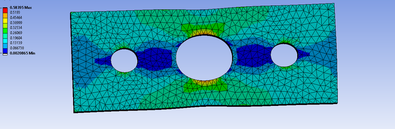

مقدمه: در کلاسهای تئوری وقتی به اصل سنونان یا معادلات کریش میرسیم، شرایط معمولاً ایدهآل فرض میشود. مثلاً میگوییم اگر یک صفحه بینهایت بزرگ داشته باشیم که وسط آن یک سوراخ دایرهای کوچک باشد، بیشترین تنش دقیقاً روی لبهی سوراخ اتفاق میافتد و مقدار آن سه برابر تنش معمولی 3σ است. طبق این اصل، اگر فقط به اندازه دو برابر قطر سوراخ 2D از لبه فاصله بگیریم، اثر سوراخ عملاً میرا شده و توزیع تنش دوباره یکنواخت میشود. اما در صنعت و طراحی اجزای ماشین، اوضاع به این سادگی نیست و طراحان مجبورند با چالشهای بسیار پیچیدهتری دستوپنجه نرم کنند. بیایید ببینیم چرا این قانون سرانگشتی در واقعیت همیشه جواب نمیدهد:
۱. محدودیت ابعاد و اثر لبهها (Finite Width Effect)
اولین چالش این است که در واقعیت صنعتی، قطعهی «بینهایت بزرگ» وجود ندارد! وقتی اندازه سوراخ نسبت به عرض قطعه خیلی کوچک نباشد، خطوط انتقال تنش هنگام عبور از کنار سوراخ جای کافی برای باز شدن ندارند و به لبههای بیرونی قطعه فشرده میشوند.
در این حالت، میدان تنش به مرزهای قطعه برخورد میکند و این یعنی اثر تمرکز تنش خیلی دیرتر از آن فاصلهی 2D از بین میرود. به همین دلیل مهندسان برای محاسبه دقیق ضریب تمرکز تنش Kt به جای فرمولهای تئوری، سراغ نمودارهای تجربی استانداردی مثل نمودارهای پترسون (Peterson's Charts) میروند.

۲. حساسیت به شیار و بارگذاری خستگی (Notch Sensitivity)
قانون افت تنش در فاصله 2D بیشتر برای بارهای استاتیک و مواد کاملاً الاستیک صادق است. در دنیای واقعی، قطعات ماشین مدام در معرض ارتعاشات و بارگذاریهای رفتوبرگشتی (خستگی) قرار دارند.
در اینجا جنس قطعه نقش اول را بازی میکند. مثلاً یک سوراخ کوچک در فولاد تُرد، بسیار خطرناکتر و حساستر از همان سوراخ در یک آلیاژ نرم و چقرمه است. بنابراین در طراحی صنعتی، ضریب تمرکز تنش استاتیک کنار میرود و ضریب تمرکز تنش خستگی Kf که تابعی از حساسیت جنس ماده است، وارد معادلات میشود.
۳. تداخل نواحی تمرکز تنش (Multiple Stress Raisers)
در ماشینآلات صنعتی به ندرت با قطعهای مواجه میشویم که فقط یک سوراخ ساده داشته باشد. قطعات معمولاً پر از رزوه، جای خار، شعاع گوشه (Fillet) یا سوراخهای مختلفی هستند که خیلی وقتها نزدیک به هم قرار گرفتهاند.
وقتی این عوارض هندسی به هم نزدیک باشند، میدانهای تنش آنها با هم ترکیب میشود و یک تمرکز تنش مرکب و غیرخطیِ وحشتناک میسازد. در این شرایط، معادلات کلاسیک تکسوراخه به هیچوجه نمیتوانند شدت این تنش ترکیبی را پیشبینی کنند.

۴. تسلیم موضعی و بازتوزیع تنش (Local Yielding)
رفتار مواد هم در توزیع تنش بسیار تعیینکننده است. اگر جنس قطعه نرم و شکلپذیر باشد، به محض اینکه تنش روی لبهی سوراخ از حد تسلیم ماده فراتر برود، آن لبه وارد ناحیه پلاستیک میشود.
این رفتار الاستوپلاستیک باعث میشود بافت اطراف سوراخ تغییر شکل داده و تنش در اطراف آن بازتوزیع شود. در نتیجه، گرادیان افت تنش کاملاً با آن چیزی که تئوری خطی الاستیسیته میگوید متفاوت خواهد شد و قانون فاصله دو برابر قطر به کل اعتبارش را از دست میدهد.